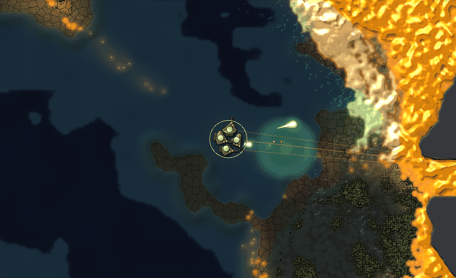
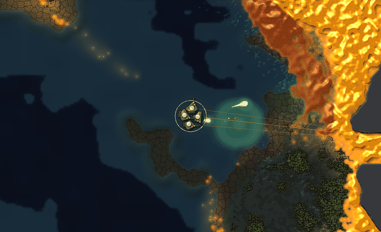
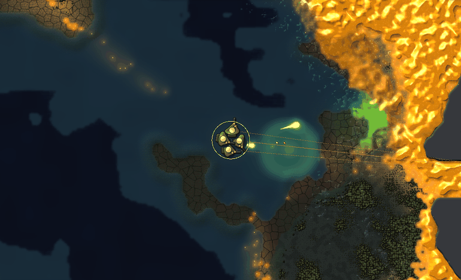

<title>Set Slime Look</title>
<meta name="claude:viewport-fit-sides" content="cover">
<link rel="stylesheet" href="https://fonts.googleapis.com/css2?family=Inter:wght@400;600&family=Space+Grotesk:wght@500;700&display=swap">
<style>
:root { --bg:#f6f3ec; --fg:#1d1b17; --muted:#6b655a; --card:#fffdf8; --line:#e2dccf; --accent:#c76a0a; }
@media (prefers-color-scheme: dark) { :root:not([data-theme="light"]) { --bg:#16140f; --fg:#ece6d8; --muted:#a39b8a; --card:#201d16; --line:#37322a; --accent:#f0a347; color-scheme:dark } }
:root[data-theme="dark"] { --bg:#16140f; --fg:#ece6d8; --muted:#a39b8a; --card:#201d16; --line:#37322a; --accent:#f0a347; color-scheme:dark }
body { background:var(--bg); color:var(--fg); font:15px/1.55 Inter, system-ui, sans-serif; padding-left:max(16px, env(safe-area-inset-left, 0px)); padding-right:max(16px, env(safe-area-inset-right, 0px)); padding-block:24px 48px }
main { max-width:1100px; margin:0 auto }
h1, h2 { font-family:"Space Grotesk", Inter, sans-serif; text-wrap:balance; line-height:1.2 }
h1 { font-size:1.9rem; margin:0 0 .3rem }
h2 { font-size:1.25rem; margin:1.6rem 0 .4rem }
p { max-width:70ch }
.sub { color:var(--muted); margin:0 0 1.2rem }
.grid { display:grid; grid-template-columns:repeat(auto-fit, minmax(300px, 1fr)); gap:14px }
figure { margin:0; background:var(--card); border:1px solid var(--line); border-radius:10px; padding:10px; min-width:0 }
figure img { display:block; width:100%; border-radius:6px }
figcaption { margin-top:.5rem; font-weight:600; font-family:"Space Grotesk", Inter, sans-serif; font-size:1.1rem }
figcaption span { display:block; font:400 .88rem/1.45 Inter, sans-serif; color:var(--muted) }
</style>
<main>
<h1>Set slime look</h1>
<p class="sub">Simulation-use plan step E2b, 2026-11-17. Slime that has set where it was shot (it stops, stops spreading, takes three hits) is drawn by its own state, from the engine's count of set walkers a cell. Only its colour, shine and glow change; its thickness and edges stay the sheet's. Planet 3, seed 4, a rifle squad standing at the slime's edge, 48 to 63 s (one frame a game second). About 1,100 walkers set by 60 s, all along the rim being shot.</p>

<h2>Which reads better as "this slime has hardened"?</h2>
<div class="grid">
<figure><figcaption>A<span>The set rim at 48-63 s.</span></figcaption></figure>
<figure><figcaption>B<span>The same rim, the same seconds.</span></figcaption></figure>
</div>

<h2>For reference: no set look</h2>
<div class="grid">
<figure><figcaption>Plain<span>Set slime drawn as the body, as today.</span></figcaption></figure>
</div>
<p>Rejected before this A/B: dark ridges (read as the player's walls) and bronze (you turned it down for condensing).</p>
</main>
